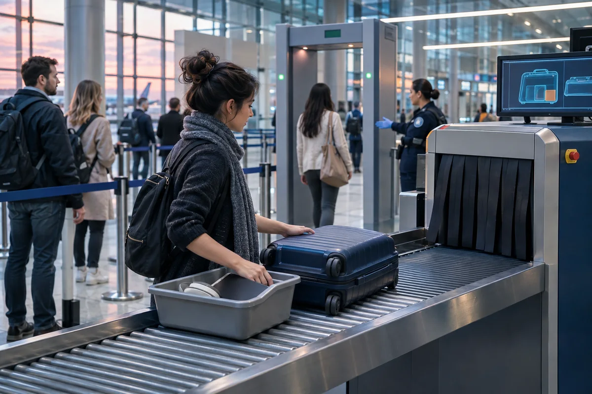

Flight DNA
A traveler studies historical flight-performance charts, a route map and trend notes beside an airport window.
These are purpose-made, AI-generated illustrations for Field Sales Atlas. Depicted airports, screens and events are illustrative, not live imagery, flight status, weather observations or travel evidence. Use the sourced results within each tool for actual information.
A traveler studies historical flight-performance charts, a route map and trend notes beside an airport window.
Queued aircraft, active gates and an air traffic control tower show airport congestion and operating capacity.
A parked jet, heavy rain, storm cloud, windsock and wet apron illustrate aviation weather risk.
A traveler with a carry-on moves between gate corridors while watching a large airport clock.

A carry-on and tray enter a baggage scanner, with a metal detector and checkpoint queue behind them.
A traveler and airline agent compare two itineraries and alternative connecting routes.